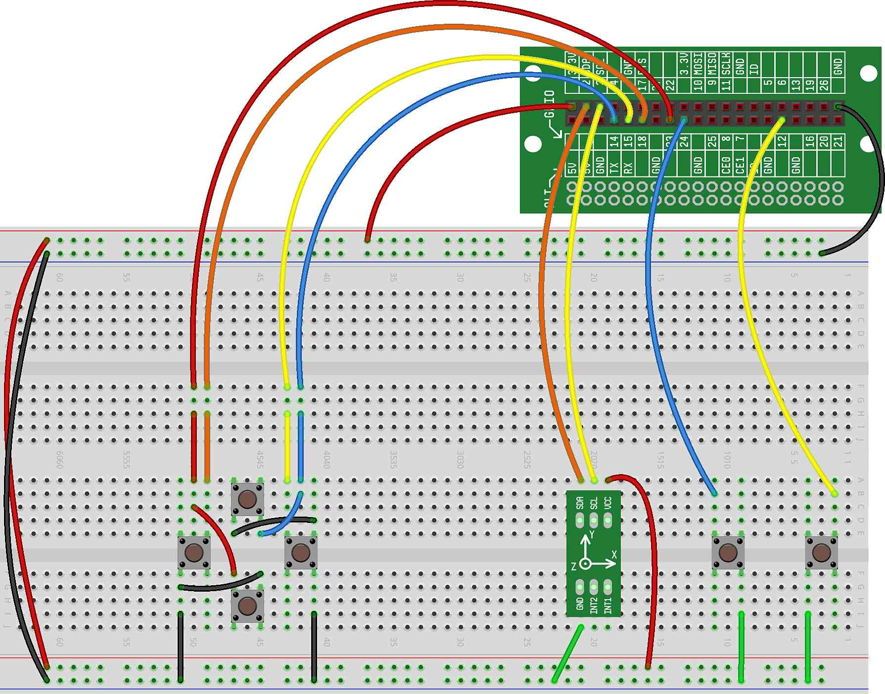

In this project, we will use the CREATOR Kit to design and build a Minecraft controller. This first version of the controller will use the accelerometer to control where your character, Steve, is looking. In addition, we'll use four buttons to control Steve's movements forward, backwards, left and right. And we'll add two extra buttons as well — a left button to allow Steve to smash and a right button that will make Steve jump.
The hardware setup for this project includes the accelerometer and four buttons. For more information about setting up the accelerometer, refer back to the project. For more information about setting up the buttons, refer back to the project.
In the code we write below, we will assume that the buttons are attached the following GPIOs:
Top Button: GPIO15
Right Button: GPIO14
Down Button: GPIO23
Left Button: GPIO18
Extra Left Button: GPIO24
Extra Right Button: GPIO12
This is what your hardware setup should look like (note that we've added some extra wires to keep the breadboard looking clean and to make the buttons easily accessible):
The software for this project will bring together our project with the and projects. The initialization code will be similar to those projects.
Here is what the code for this project should look like (where the new code we'll discuss below is highlighted with red arrows):
The new additions we've made to the code (and highlighted above) are:
On Lines 16 through 39, we test each button and perform and action to control Steve. For
example, if the left button is_pressed, we will start moving Steve left. If the
left button is NOT pressed, then we will stop Steve moving left (by releasing the left keystroke
using release=True).
We repeat this if/then/else statement for all of the other buttons as well.
On line 42,
we control where Steve is looking based on how the accelerometer is tilted. The accelerometer returns a value between -1 and
1. The look() API function requires larger values to make Steve move. The larger
the value, the more he moves. So, we multiply the value times 50 to get Steve to move more
significantly.
Give your controller a try and see how it works. In our upcoming projects, we'll improve the code and add more controller functionality.
NOTE: You may find that when you press the "TAB" key to exit any of the Minecraft Controller projects, it may be difficult to control the cursor with the mouse (this will be especially true in later Minecraft Controller projects). This is because the cursor is still being partially controlled by the CREATOR Kit. If you tilt the CREATOR Kit around, you'll find that it's easier to control the mouse with the CREATOR Kit in certain positions. Once you STOP the Minecraft program, all cursor control should return to the mouse.
Add another button (or remap an existing button) to allow Steve to crouch at the press of the button.
Modify the code so that pressing and holding a button doesn't work — instead, have Steve only move a small amount when a button is pressed.
Modify the code so that Steve's movements are based on the accelerometer and where he looks are controlled by the buttons.